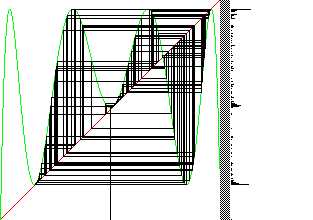

Here are the graphical iteration and histogram plots for s = 3.828. Most points cluster around the x-values that will become the 3-cycle, but some points still wander between these values.
On the left below is the graphical iteration for L3(x). We have not quite reached the tangent bifurcation, so the graph is very close to the diagonal, but has not yet crossed it.
A magnification (right) reveals a consequence of not yet crossing the diagonal. Graphical iteration gets stuck for a while in each of these narrow throats, but then escapes.
Iterates of L3(x) being stuck near fixed points implies iterates of L(x) get stuck near the 3-cycle.
|  |
Could intermittency be a source of pleasing mixtures of novelty and familiarity?
Return to Deterministic Chaos.